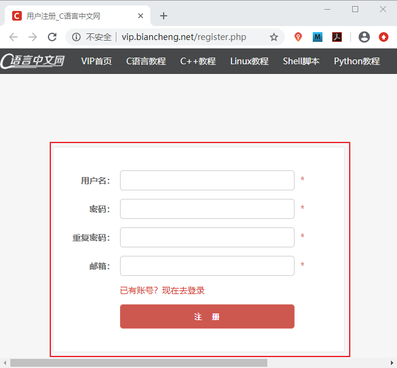
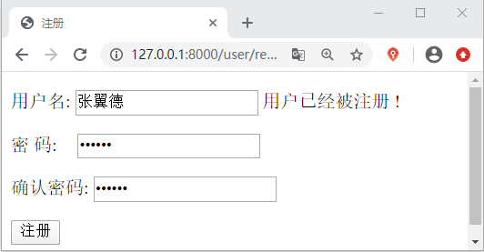

Django HTML表单实现用户注册
在本节我们将进入逻辑性较强的代码环节，主要以实现项目中功能为主，并且会穿插介绍一些知识点，带领大家对之前讲过的知识进行重点复习，做到温故而知新。在以下几节中我们将重点介绍如何实现 Django 的注册登录这一基础功能，如果有小伙伴对 HTML Form 表单不熟悉的，建议马上进行复习，很简单的一看就会哦，下面就正式开始本节的内容。
Form 表单可以用来收集其内部标签中的用户输入，并将搜集到的用户输入以键值对的形式提交给 action 属性关联的 url，比如 <input> 的输入就是以 name 属性值为键，以 value 为值。然后通过 GET/POST 方法将数据发送到服务端进行处理。
注册登录退出功能与实际的业务逻辑相比较还是比较简单的，大家通过简单功能的学习，要学会如何使用 Django 进行功能开发的基本模式，这是本节中最需要领悟的知识点，也是重中之重。再就是要善于利用异常处理机制，这是 Python 语言的一个特性，它会帮助我们在程序出错的时候进行分析处理，同时也避免大面积报错时找不到根源的问题。以上就是本节的相关总结，在下一节，我们将继续讲解如何实现用户的登录功能。
1. HTML表单实现用户注册
在每一个 Web 应用网站都会提供用户的注册功能，这也是网站获取用户信息的一种方式，所以要理解此处的逻辑，大家几个网站平台的账号，不过在向注册的过程中，要站在一个程序员的角度，去思考问题，我相信你会有很大的发现与收获，如图所示是 C语言中文网的注册界面。

图1: C语言中文网注册界面
图1: C语言中文网注册界面
1) Django Form表单的处理过程
Django 开发的是动态 Web 服务，而非单纯提供静态页面。动态服务的本质在于和用户进行互动，接收用户的输入，然后根据输入的不同，返回不同的内容给用户。在这个过程中返回数据是服务器后端完成的，而接收用户输入就需要靠 HTML 表单即<form> 标签来完成。Form 表单可以用来收集其内部标签中的用户输入，并将搜集到的用户输入以键值对的形式提交给 action 属性关联的 url，比如 <input> 的输入就是以 name 属性值为键，以 value 为值。然后通过 GET/POST 方法将数据发送到服务端进行处理。
2) 模板层编写HTML Form表单
新建一个 app 应用使用python manager.py startapp user 在 templats\user 目录下新建 register.html 文件并在其中简单编写如下代码：
<!DOCTYPE html>
<html lang="en">
<head>
<meta charset="UTF-8">
<title>注册</title>
<style>
#reg .pwd p input{
margin-left:14px
}
</style>
</head>
<body>
<div id="reg">
<form action="/user/reg/" method="post">
{% csrf_token %}
<p>
用户名: <input type="text" name="username" value="{{ username }}">
<span>{{ username_error }}</span>
</p>
<div class="pwd">
<p>
密 码: <input type="password" name="password_1" value="{{ password_1 }}">
<span> {{ password_1_error }} </span>
</p>
</div>
<div class="pd">
<p>
确认密码: <input type="password" name="password_2" value="{{ password_2 }}">
<span> {{ password_2_error }} </span>
</p>
</div>
<p>
<input type="submit" value="注册">
</p>
</form>
</div>
3) 视图层编写用户注册逻辑代码
在 user 应用的 views.py 编写用户注册的逻辑业务代码。如下所示：
from django.shortcuts import render
import hashlib
from django.http import HttpResponse
from user.models import User
def reg_view(request):
#用户注册逻辑代码
if request.method == 'GET':
return render(request, 'user/register.html')
elif request.method == 'POST':
#处理提交数据
username = request.POST.get('username')
if not username:
username_error = '请输入正确的用户名'
return render(request, 'user/register.html', locals())
password_1 = request.POST.get('password_1')
#1 生成hash算法对象对密码进行加密
m = hashlib.md5()
#2 对待加密明文使用update方法！要求输入明文为字节串
m.update(password_1.encode())
#3 调用对象的 hexdigest[16进制],通常存16进制
password_m1 = m.hexdigest()
print(password_m1)#加密后的密文会显示在终端上
password_2 = request.POST.get('password_2')
#对password_2执行MD5加密处理
m = hashlib.md5()
m.update(password_2.encode())
password_m2 = m.hexdigest()
print(password_m2)
#可以设定密码格式，判断是都符合
if not password_m1 or not password_m2:
password_1_error = '请输入正确的密码'
return render(request, 'user/register.html', locals())
#判断两次密码输入是否一致
if password_m1 != password_m2:
password_2_error = '两次密码不一致'
return render(request, 'user/register.html', locals())
#查询用户名是否已注册过
try:
old_user = User.objects.get(username=username)
#当前用户名已被注册
username_error = '用户已经被注册 !'
return render(request, 'user/register.html',locals())
except Exception as e:
# 若没查到的情况下进行报错，则证明当前用户名可用
print('%s是可用用户名--%s'%(username, e))
try:
user = User.objects.create(username=username, password=password_m1)
#注册成功后
html = '''
注册成功 点击<a href='/index/'>进入首页</a>
'''
#存session
request.session['username'] = username
return HttpResponse(html)
#若创建不成功会抛出异常
except Exception as e:
# 还可能存在用户名被重复使用的情况
print(e)
username_error = '该用户名已经被占用 '
return render(request, 'user/register.html', locals())
4) 数据存储层编写Model模型类
在 user 应用的 user\models.py 中编写对应的模型类，如下所示，新建了三个字段：
from django.db import models
class User(models.Model):
username=models.CharField(max_length=100,verbose_name='用户注册')
password =models.CharField(max_length=100,verbose_name='用户密码')
create_time=models.DateTimeField(auto_now_add=True)#第一次创建的时间
def __str__(self):
return '用户名：%s'%(self.username)
5) 完成路由映射关系配置
最后就是需要完成路由关系的配置，首先建立分布式路由。首先在 BookStore\urls.py 中关联 user 应用的路由映射，然后在 user 应用中新建 urls.py 文件，并关联视图函数 reg_view。代码如下所示：
#BookStore\urls.py代码
urlpatterns=[path('user/',include('user.urls'))]
#user\urls.py代码
from django.urls import path
from user import views
urlpatterns=[
path('reg/',views.reg_view)
]
6) 用户注册效果展示
访问 127.0.0.1:8000\user\reg 进行用户的注册。我们分别注册了以下用户，访问 MySQL 数据库对注册用户数据记录进行查询，如下所示：mysql> select * from user_user; +----+----------+----------------------------------+----------------------------+ | id | username | password | create_time | +----+----------+----------------------------------+----------------------------+ | 1 | 冯增斌 | 123456 | 2020-06-09 10:14:59.525601 | | 2 | 关云长 | 123456 | 2020-06-09 11:29:45.469154 | | 3 | 张翼德 | e10adc3949ba59abbe56e057f20f883e | 2020-06-09 13:04:23.943287 | | 4 | 黄汉升 | 25f9e794323b453885f5181f1b624d0b | 2020-06-09 13:05:33.282287 | | 5 | 马孟起 | e10adc3949ba59abbe56e057f20f883e | 2020-06-09 13:06:16.395309 | | 6 | 赵子龙 | 9fa5398e7aaf9e3a9cd3a1035998454d | 2020-06-09 13:06:56.038290 | | 7 | 刘玄德 | e10adc3949ba59abbe56e057f20f883e | 2020-06-09 14:55:27.623265 | | 8 | 诸葛亮 | e10adc3949ba59abbe56e057f20f883e | 2020-06-09 16:07:21.851377 | +----+----------+----------------------------------+----------------------------+ 8 rows in set (0.00 sec)上述数据表中就是我们已经注册的用户，我们此时再将求中一个用户进行注册，就会得到如下的结果：

图1: HTML表单实现用户注册
上述代码就完成了一个简单用户注册功能，在代码注释中包含了实现功能的逻辑思路，因为 Django 时后端框架，所以对于前端的界面，我们基本没有进行设计，只关注了后端的逻辑代码，后续会使用 Bootstrap 对界面进行一个简单的美化。下面我们对上述过程中的知识点以及注意事项进行总结归纳。
图1: HTML表单实现用户注册
2. 总结以及注意事项
1) 注意事项
当你使用命令新建 user 应用后，各位小伙伴，你有没有对应用进行注册呢？如果没有注册，那么你会收到一大堆的报错信息，app 应用又是如何进行注册的呢，你还记得吗？首先找到配置文件 settings.py，然后在 INSTALL_APPS 列表中注册应用 user。还有当你在 user\models.py 中创建完成模型类数据表后，有没有记得要执行数据库的迁移命令呢？如果不执行你也会收到 n 多条的报错信息。以上这些小的细节，你注意到了吗？2) 总结归纳
本节使用 HTML Form 表单完成了我们第一个功能即用户的注册功能。我们从 Django MTV 设计模式的三个角度出发编写代码，从这个过程中，我相信大家对于 Django 的使用模式有了进一步的了解。而对于注册功能的逻辑分析，这个能力需要大家不断人提高，计算机技术与应用是一门思维严谨的学科，要求我们有缜密的思维逻辑，当然这个能力不是一蹴而就的，需要各位小伙伴，多写多分析多练习，比如分析其他网站的登录注册的逻辑，你会发现有很多思维都具有共性，所以我说注册登录是基础功能，但是它又不可或缺。注册登录退出功能与实际的业务逻辑相比较还是比较简单的，大家通过简单功能的学习，要学会如何使用 Django 进行功能开发的基本模式，这是本节中最需要领悟的知识点，也是重中之重。再就是要善于利用异常处理机制，这是 Python 语言的一个特性，它会帮助我们在程序出错的时候进行分析处理，同时也避免大面积报错时找不到根源的问题。以上就是本节的相关总结，在下一节，我们将继续讲解如何实现用户的登录功能。
关注公众号「站长严长生」，在手机上阅读所有教程，随时随地都能学习。内含一款搜索神器，免费下载全网书籍和视频。

微信扫码关注公众号